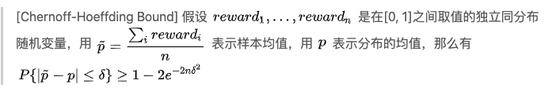
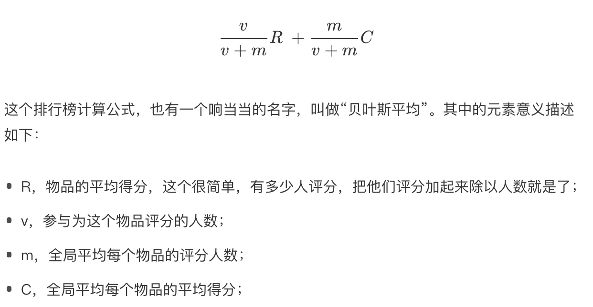
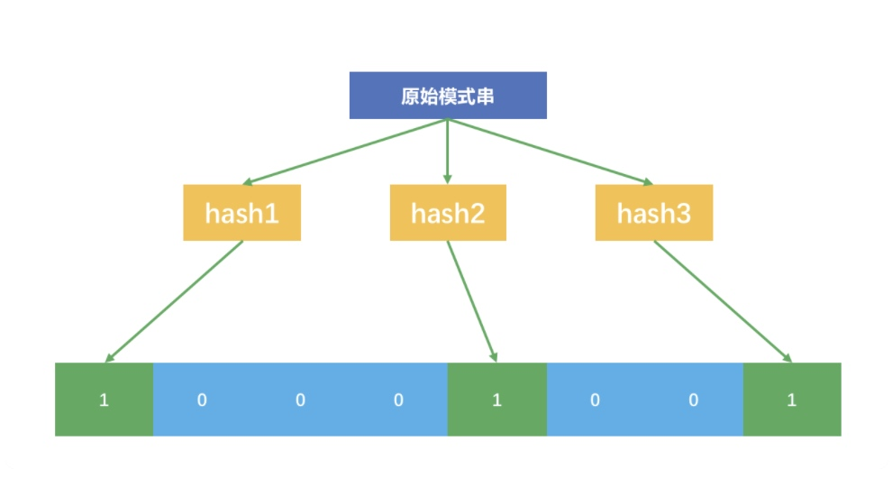

所属 Topic：推荐系统 · 类型：概念
多臂赌博机问题： 假设一个用户对不同类别的内容感兴趣程度不同，当推荐系统初次见到这个用户时，怎么快速地知道他对每类内容的感兴趣程度？这也是推荐系统常常面对的冷启动问题。 EE问题
python工具 https://github.com/SMPyBandits/SMPyBandits/
https://github.com/bgalbraith/bandits
1. bandit算法系列#
参考：https://zhuanlan.zhihu.com/p/32335683
(1) epsilon-greedy
* 每次来了一个新客人后，以e的概率进行探索。从N道菜中随机选择一个让客人吃，然后根据反馈更新概率(p_1,p_2,...p_N)
* 以1-e的概率利用，从N道菜中选择概率最高的一个推荐给用户
问题，上面的两个步骤对应着的两个问题
* 不管和好结果还是差结果，其在探索的时候概率都是一样的，这是不公平的
* 直接依据概率选择，会存在因为次数不同导致的置信度问题
（2）UCB
考虑推荐中某个阶段，我们有对各个物品偏好的估计(p_1, p_2, ...p_N)以及每个物品被估计的置信次数。那么下一次推荐时候如何考虑概率以及置信度呢？
我们知道，样本估计与真值之间是存在误差的，即\hat p - △<= p <= \hat p + △, 这里用置信上限作为其概率的估计
注意：当实验次数较少的时候，置信区间会比较大，即让少出现的物品多出现一些。从而解决了epsilon-greedy会出现的两个问题
△估计问题：

当\delta =\sqrt{2lnT/n} 时候，简化有
$P{|\hat p - p|<=\sqrt{2lnT/n}}>= 1-\frac{2}{T^4}$
zzz: 直接用比例的置信区间
△=z_{\alpha/2}\sqrt{p(1-p)/n}。 令2e^{-2n\sigma^2}=\alpha=5%。可以推算出来，在5%置信度下
UCB边界是\sqrt{1.844/n},而比例的置信区间是1.96\sqrt{p(1-p)/n}。即比例的置信区间求解出来的△要偏小一些。
（3）Thompson Sampling
UCB的缺点是:无法融合先验知识。 UCB是频率学派的方法，而Thompson Sampling是贝叶斯学派的
$p(\theta|X)=p(X|\theta)p(\theta)$
其中先验p(\theta)选择为Beta(\alpha, \beta)分布
贝塔分布有a和b两个参数。这两个参数决定了分布的形状和位置：
* 当 a+b 值越大，分布曲线就越窄，分布就越集中，这样的结果就是产生的随机数会容易靠近中心位置；
* 当 a/(a+b) 的值越大，分布的中心位置越靠近 1，反之就越靠近 0，这样产生的随机数也相应第更容易靠近 1 或者 0。
你把贝塔分布的a参数看成是推荐后得到用户点击的次数，把分布的 b 参数看成是没有得到用户点击的次数。按照这个对应，再来叙述一下汤普森采样的过程。
1. 取出每一个候选对应的参数 a 和 b；
2. 为每个候选用 a 和 b 作为参数，用贝塔分布产生一个随机数；
3. 按照随机数排序，输出最大值对应的候选；
4. 观察用户反馈，如果用户点击则将对应候选的 a 加 1，否则 b 加 1；
注意，实际上在推荐系统中，要为每一个用户都保存一套参数，比如候选有 m 个，用户有 n 个，那么就要保存 2 * m * n 个参数。汤普森采样为什么有效呢？解释一下。
1. 如果一个候选被选中的次数很多，也就是 a+b 很大了，它的分布会很窄，换句话说这个候选的收益已经非常确定了，用它产生随机数，基本上就在中心位置附近，接近平均收益。
2. 如果一个候选不但 a+b 很大，即分布很窄，而且 a/(a+b) 也很大，接近 1，那就确定这是个好的候选项，平均收益很好，每次选择很占优势，就进入利用阶段，反之则几乎再无出头之日。
3. 如果一个候选的 a+b 很小，分布很宽，也就是没有被选择太多次，说明这个候选是好是坏还不太确定，那么用它产生随机数就有可能得到一个较大的随机数，在排序时被优先输出，这就起到了前面说的探索作用。
choice = numpy.argmax(pymc.rbeta(1 + self.wins, 1 + self.trials - self.wins))
各种方法模拟的对比效果: https://gist.github.com/anonymous/211b599b7bef958e50af
不知道这个是谁写的，但是看绘图感觉和教程中的是同一个。
2.结合上下文的bandit#
(1)LinUCB
传统的UCB主要是根据用户‘实验’结果进行动态更新，而没有利用本身的item的特征信息。
排行榜/热门list#
当新用户来了时候，一个最简单的推荐策略就是热门推荐。
(1)最简单的排行榜
就是按照某种统计指标进行排序，比如点击量、点赞数、销售量等。但是这样的方式会存在一些问题(类似搜索排序中只按照点击排序一样):
- 容易刷榜
- 没有考虑时效性
- 马太效应
(2)时效性
- 加上结果的时间衰减，比如Hacker News采用的方式 P/(T)^{\alpha}
- 另一种方式类似冷却定律，其实就是采用指数衰减方式T=H + Ce^{-\alpha t}
(3)以某种比率设计
除了按照绝对的量之外，常见的还有按照点击率，好评率等比率类指标来的
- 方式一: wilson比率的置信区间
- 方式二: 贝叶斯均值。

其他#
- 推荐候选池的去重
(1) 内容源去重
内容去重，直观思路就是对内容做分词，提取关键词，然后计算两两之间的相似度。
google 2007年提出的Simhash。 关于对其原理由来的理解，可以参照 https://zhuanlan.zhihu.com/p/92155250
从文本向量词空间模型=> simhash
在词向量模型中，一般是把句子进行切词成term，然后映射成one-hot编码。然后一个语句的向量用各个term的向量相加进行表示。这种方式的主要缺点就是当维度比较高的时候，计算量会比较大。
simhash从词语编码的降维入手，实现了对TF的降维。
其基本过程如下:
step1: 将分词后的term进行hash编码。
step2: 将term二进制中的0全部变为-1。并对向量乘以该term的权重。
step3: 将所有term的编码相加，得到句子的编码。
step4: 将句子编码中的非正数转为0，正数元素转为1，就得到了最终的simhash编码
python有simhash 包可实现
(2) 不重复推荐给用户
每个内容都有一个内容id，uuid一般是一个字符串，已经推荐过的内容就不再推荐给用户了。即看一个字符串是否在一个集合中。
Bloomfilter。简单的说也是用hash，会存在一定的误判概率。过程如下:
step1: 设计n个hash函数，准备一个长度为m的二进制向量，初始化全为0
step2:每个哈希函数把集合内的元素映射为一个不超过 m 的正整数 k，m 就是二进制向量的长度；
step3: 把这个二进制向量中的第 k 个位置设置为 1；也就是一个元素会在二进制向量中对应 n 个位置为 1。
step4: 对集合中的元素都这么操作后就得到一个很大的二进制向量，要查找的元素也进行如此操作，然后看其对应位置上的数字是不是都是1，如果都是1就认为在原来的集合中
python中有
pybloom等包可实现